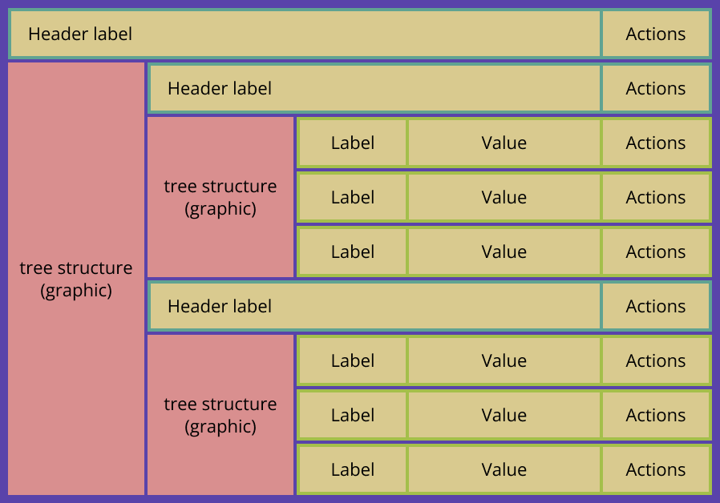
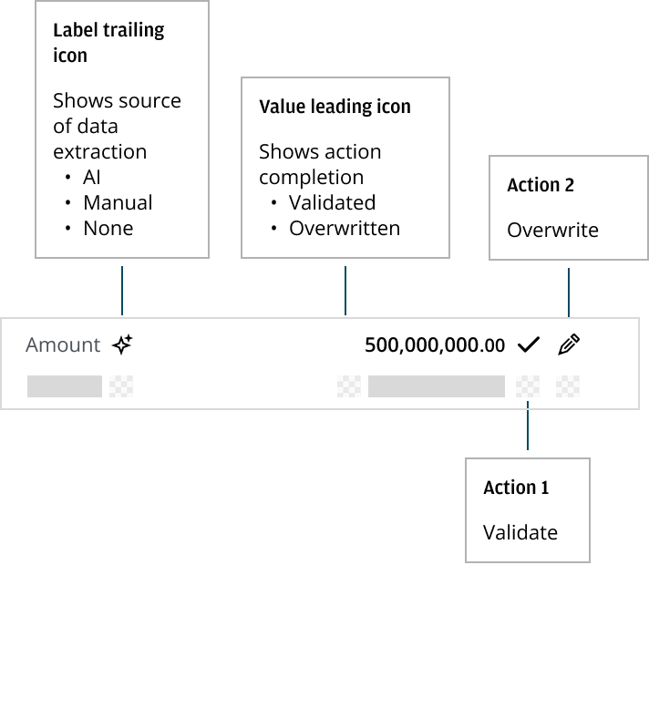

AI Data Extraction & Validation Pattern
A reusable enterprise pattern for reviewing, validating, and correcting AI-extracted information — built with Salt using atomic design principles.

Context
Organizations across JPMorganChase Global Banking were beginning to use LLMs to extract information from documents, but teams were building in isolation. Different groups were shipping document extraction flows, entity extraction experiences, validation workflows, and AI review processes — each with its own interaction model.
There was no common pattern for reviewing extracted data, validating AI outputs, correcting mistakes, preserving source attribution, or tracking human overrides. As AI adoption accelerated, that fragmentation was on track to create real usability, accessibility, and governance problems across the business.
My Role
I was asked to design and operationalize a reusable Design System pattern that would standardize AI extraction experiences, support complex enterprise workflows, scale across lines of business, enable human oversight of AI outputs, and create a bridge between design and engineering.
That meant gathering use cases from teams already building extraction tools, defining UX principles, writing guidelines, working directly with engineers, and driving the pattern to implementation readiness.
Research & Discovery
I started by collecting extraction workflows already in flight across multiple teams — competitive examples, internal prototypes, and early inspiration boards — and mapped the common interaction patterns underneath them.
Problem Definition
The core loop every team kept reinventing came down to the same five steps:
Left unaddressed, this fragmentation carried real risk: missing provenance, hidden confidence levels, inconsistent editing behavior, and no audit trail for what a human had changed and why.
Design Principles
Every downstream decision — from field states to source indicators to the editing flow — traces back to a small set of principles established early and applied consistently across the pattern.
 Human-in-the-Loop
Human-in-the-Loop
 Principle 2
Principle 2
 Principle 3
Principle 3
 Principle 4
Principle 4
 Principle 5
Principle 5
Pattern Anatomy
The pattern's information architecture broke down into six parts, each solving a specific failure point teams kept hitting independently.

Component States & Provenance
Provenance turned out to be the differentiator. Every field carries both a state — extracted, validated, edited, or rejected — and a source — AI generated, human entered, system generated, or validated — so nothing loses its history as it moves through review.
Editing follows one path everywhere the pattern is used: a field is opened, edited, given a reason for the change, and saved — with the original value and the audit trail preserved underneath.

Accessibility & Scale
Real documents don't stop at a handful of fields. The pattern had to hold up at 100+ extracted fields per document, so search, filter, tree navigation, and multi-page support were treated as core requirements rather than later additions.
From Pattern to Code
The pattern moved from concept to reusable asset through a defined pipeline: pattern definition, guidelines, a Figma library, a Storybook implementation, and finally hand-off to product teams. It's published in JPMorganChase's GB Design Pattern Library today.
On the development side, I worked design-to-code directly — using GitHub Copilot inside a VS Code workflow to generate components and documentation straight from the design pattern, shortening the distance between design intent and shipped code.

Outcome
- Published in the GB Design Pattern Library
- Established as a reusable enterprise pattern
- Documentation and guidelines completed
- Code implementation initiated
- Accessibility-defined workflow for 100+ field documents
- Supported multiple AI extraction use cases across teams
- Established a governance model for AI-generated content
Designed and operationalized an enterprise AI Data Extraction & Validation Pattern that standardized how users review, validate, and correct AI-generated information — transforming a collection of ad hoc workflows into a reusable design system asset with documented implementation guidance and code-ready specifications.